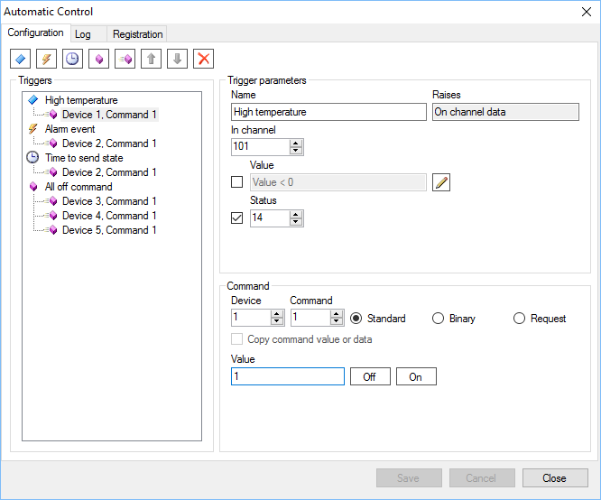

.
.Automatic Control Module allows to automatically send commands depending on certain conditions. Unless you register the module, it works in the demo mode. The duration of a full functional demo is limited to 10 minutes after restart. The module works under control of the Server application. The form shown below is designed to configure the module.

Conditions required for sending commands specified as triggers of several types:
Each trigger contains a set of commands which are sent if the trigger fires. The information about firing of the triggers is accessible on the Log page or directly from the ModAutoControl.log file. This file is located in Server logs directory C:\SCADA\ScadaServer\Log
Automatic Control Module is installed in accordance with the general sequence of installing Server modules. The module library file is ModAutoControl.dll. After adding the module, you need to perform several additional actions:
.String data of telecontrol command, which are send on trigger firing, can contain variables. Variables are written in braces.
The following variables are supported:
| Variable | Description |
|---|---|
| {n} | The current value of the input channel n with a unit, where n is a channel number, n = 0 is the channel specified in the data trigger |
| {Now} | The current date and time on the server |
| {CnlNum}, {CnlName} | Parameters of the data trigger: input channel number and name |
| {CnlVal}, {CnlStat} | Value and status of the input channel those caused the trigger firing |
| {EvNum}, {EvTime}, {EvObj}, {EvDev}, {EvCnl}, {EvText} | Parameters of the event that caused the trigger firing: number, date and time, object, device, channel and description |
| {CtrlCnlNum}, {CtrlCnlName} | Parameters of the command trigger: output channel number and name |
| {CmdVal}, {CmdDataStr}, {CmdDataHex} | Parameters of the command that caused the trigger firing: value, data as a string, data in hexadecimal representation |